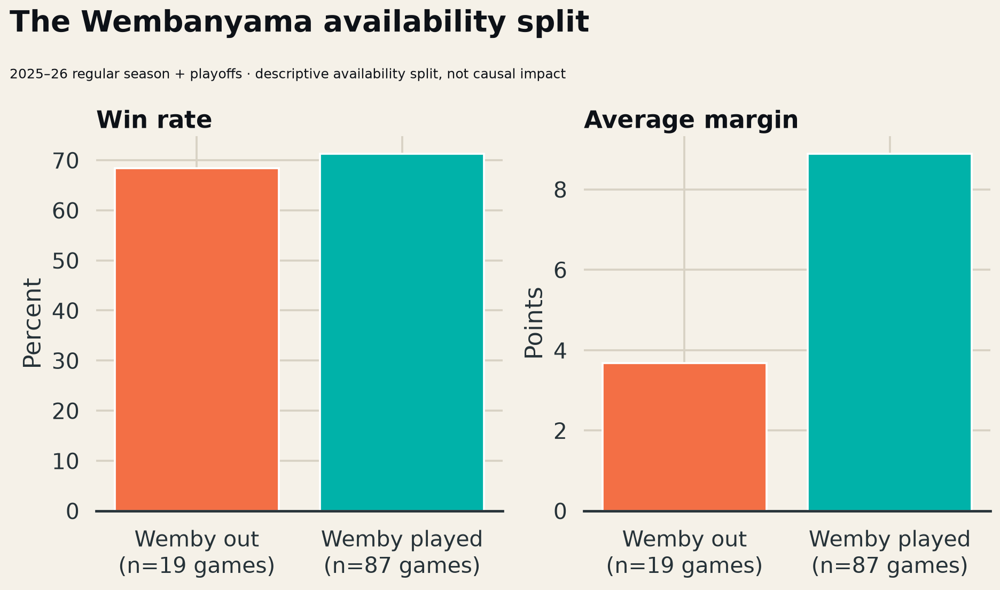

How different did San Antonio’s results look when Victor Wembanyama played, and which descriptive gaps matter most for roster resilience?
The Spurs went 71.3% in games Wembanyama played with a +8.9 average margin, versus 68.4% and +3.7 when he was out. The descriptive margin gap is +5.2 points per game.
The 106-game sample combines regular season and postseason games. Availability is entangled with schedule strength, teammate availability, and game state, so this is a decision-oriented descriptive split—not a causal on/off estimate. The companion data keeps opponent and season-type fields available for a controlled extension.

Fit opponent-adjusted hierarchical models with teammate availability, days of rest, and projected role minutes; move to possession-level rim frequency and finishing once tracking data is licensed.